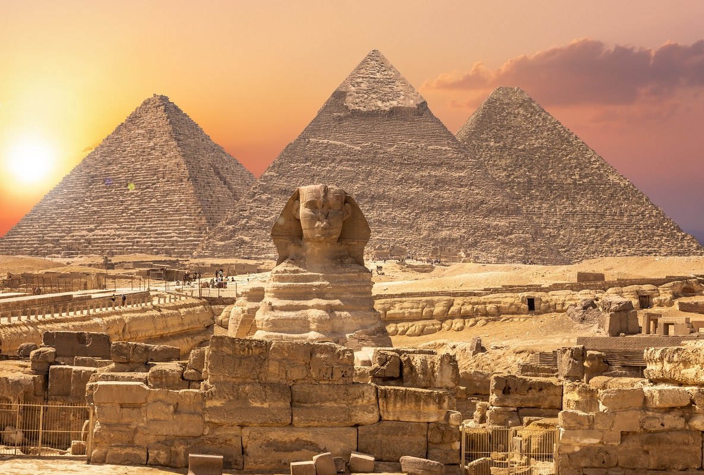

埃及十日遊

📍 地點：埃及
📅 天數：10天9夜
💰 價格：NT$ 53,900 起
行程內容
Day 1｜出發 → 開羅
- 搭乘國際航班前往開羅
- 抵達後入住飯店休息，適應時差
Day 2｜吉薩金字塔與獅身人面像
- 參觀吉薩金字塔群
- 拍攝獅身人面像經典景色
- 探索古埃及文化歷史
Day 3｜埃及博物館 & 開羅市區
- 參觀開羅埃及博物館，欣賞法老文物
- 遊覽開羅老城與街道風情
- 晚餐品嘗當地傳統美食
Day 4｜路克索神殿
- 搭乘內陸航班前往路克索
- 參觀路克索神殿，欣賞古埃及建築
- 晚間自由活動或夜遊路克索市區
Day 5｜卡納克神殿 & 尼羅河遊船
- 參觀壯麗的卡納克神殿群
- 搭乘尼羅河遊船欣賞沿岸風光
- 體驗埃及歷史文化氛圍
Day 6｜帝王谷 & 哈利利市集
- 遊覽帝王谷，探索法老陵墓
- 下午前往哈利利市集購物與拍照
- 體驗當地市集文化與特色小吃
Day 7｜阿布辛貝神殿一日遊
- 搭乘短程飛機前往阿布辛貝神殿
- 欣賞拉美西斯二世雕像與太陽光照奇景
- 傍晚返回路克索
Day 8｜亞斯文水壩與費盧卡船
- 參觀亞斯文高壩及納賽爾湖景觀
- 乘坐費盧卡帆船遊尼羅河
- 享受河畔美景與寧靜氛圍
Day 9｜開羅自由活動
- 返回開羅，享受自由行
- 可選擇購物或參觀當地小景點
- 最後晚餐，品嘗埃及傳統美食
Day 10｜返回台灣
- 早餐後前往機場搭乘班機返回台灣
- 結束愉快埃及文化之旅